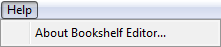

> Learning the Graphical User Interface (GUI) >
The Menu Bar >
Help Menu
3.2.5. Help Menu
The following shows the open Help menu and explains its features.

The Help menu consists of the following Bookshelf Editor command:
-
About Bookshelf Editor
Opens the About WatAGE Bookshelf Generator dialog box, which provides legal and copyright information.